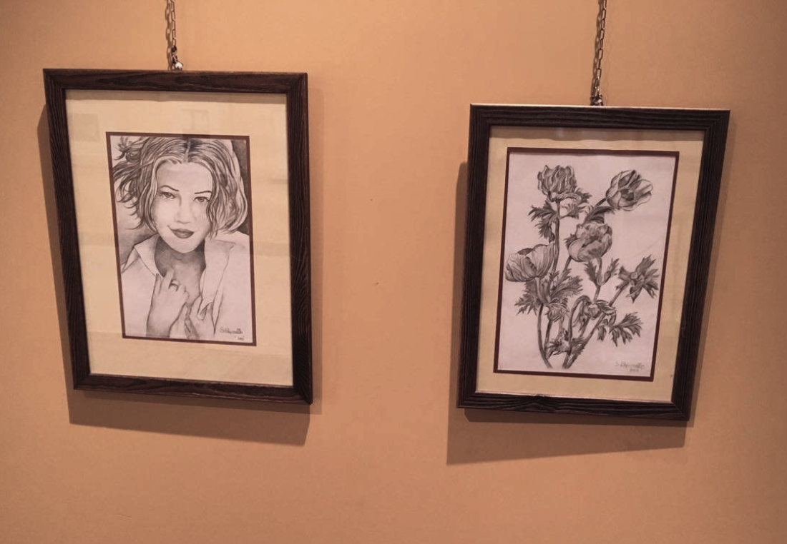
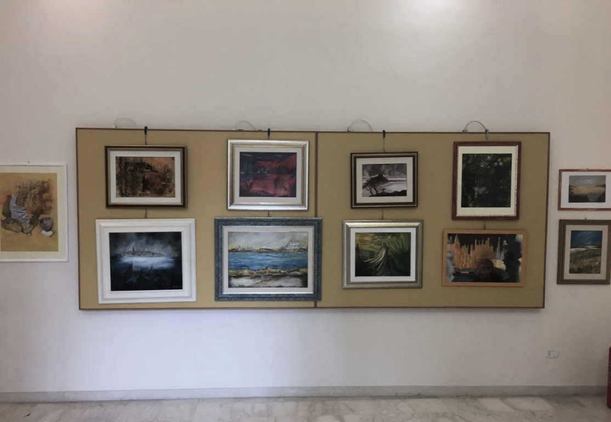
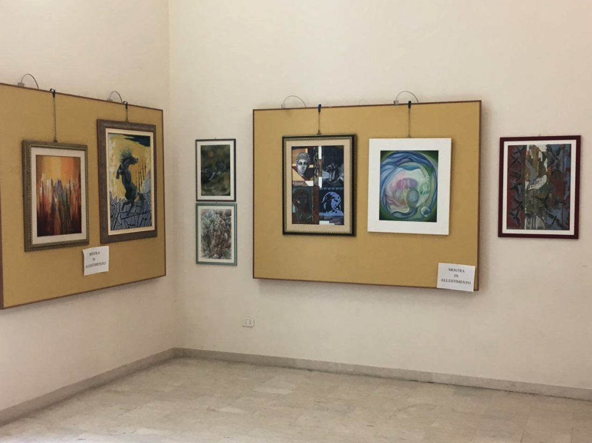
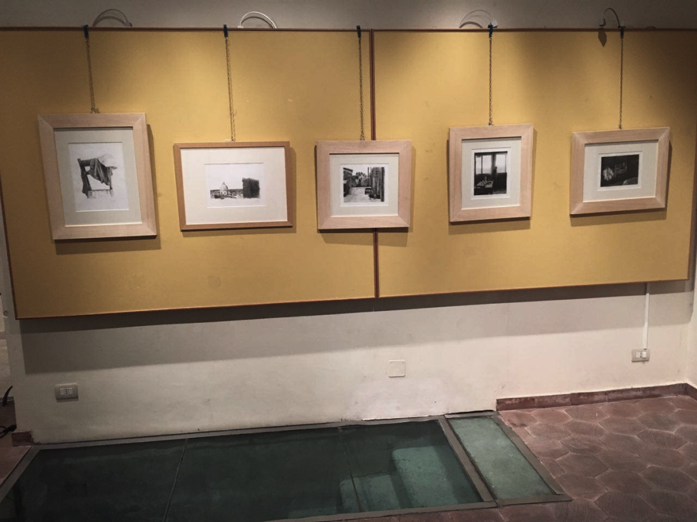
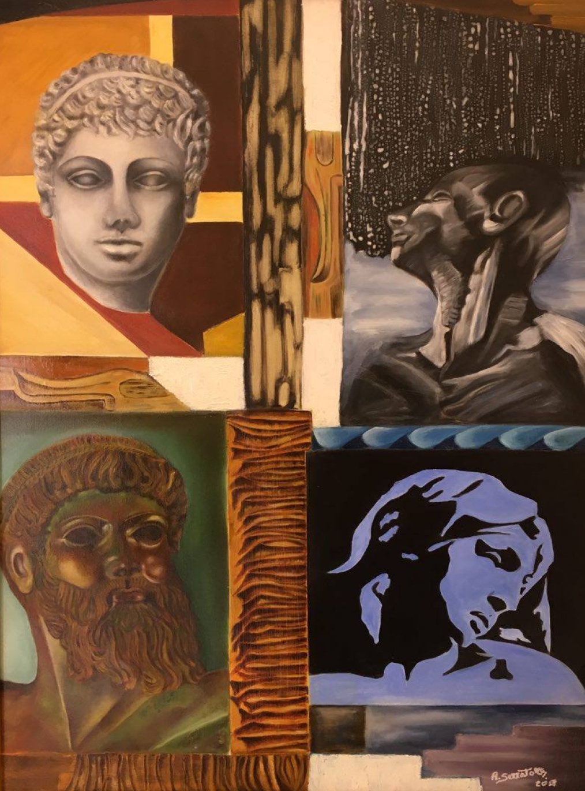

Mostra pittorica
Serena Capizzello &
Antonella serratore
Contesti Espressivi

Senza Titolo

Senza Titolo

Senza Titolo

Senza Titolo

Il gruppo di alunni dell'ITR "Francesca Morvillo" di Catania, in alternanza Scuola-Lavoro che si occupa di Marketing Turistico, ha raccolto la documentazione fotografica riguardante i lavori di allestimento della Mostra Bipersonale "Contesti Espressivi", delle artiste Serena Capizzello e Antonella Serratore, a cura dell'Accademia Federiciana di Catania, per il settimo festival siciliano della cultura
La mostra è aperta dalle ore 16:00 alle ore 19:30. L’ingresso alla mostra è gratuito. Le sale occupate dalla mostra sono rispettivamente le sale 1 e 2.